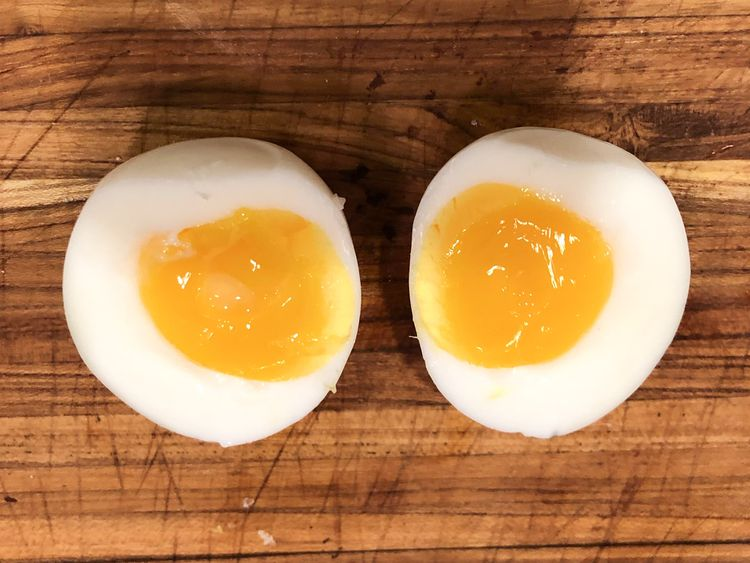

Description
These sous vide eggs come out soft-boiled with firm egg whites and a just-solidified yolk. Eggs are an excellent candidate for sous vide cooking because you can control the temperature. The last time I made these for my girlfriend, Sherry, she stopped me mid-sentence to say, "These eggs are perfect!"
Ingredients
Steps
- Step 1: Prepare a heat-proof container of water with a sous vide cooker. Set temperature to 150 degrees F (66 degrees C).
- Step 2: Fill a bowl with enough ice water to cover eggs; set aside.
- Step 3: Fill a saucepan with water and bring to a boil. Add eggs to boiling water and cook until whites are set, exactly 5 minutes. Transfer eggs to the ice bath to stop the cooking process, at least 1 minute.
- Step 4: Place eggs into the sous vide water bath; set a timer for 40 minutes.
- Step 5: Serve immediately or refrigerate and reheat for a few minutes in the sous vide or a bowl of hot water.
Home